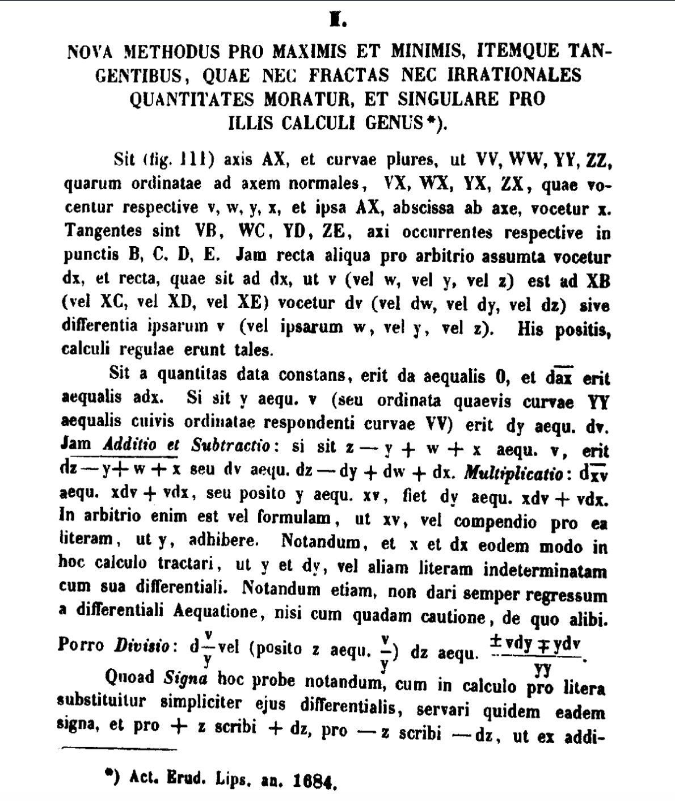

On the first page of the calculus, Leibniz lists his rules: da = 0 for a constant, d(ax) = a dx, the differential of a sum is the sum of the differentials, and Multiplicatio: d(xv) = x dv + v dx. Then comes a sentence about notation itself: “In arbitrio enim est vel formulam, ut xv, vel compendio pro ea literam, ut y, adhibere”, “for it is at our discretion to use either the formula, like xv, or, as an abbreviation for it, a letter, like y.” A letter may stand for a whole formula. That is Chapter 7's compression, written into the rules of the calculus. CITED
His quotient rule is printed as d(v/y) = (±v dy ∓ y dv)/yy. The script checks both readings against the derivative at nine points. With the lower signs, (y dv − v dy)/yy, it is correct at every point. With the upper signs it gives exactly the negative. The next paragraph, “Quoad Signa…”, explains that the signs are settled by whether the quantities increase or decrease. The formula leaves a slot, and a fact about the quantities fills it. COMPUTED
Aberdein's review of Ganesalingam's The Language of Mathematics reports its central observation: “Ganesalingam observes that the syntax of mathematics is type-dependent”, so that whether an expression is even well formed can depend on what kind of object its letters denote. Ganesalingam also insists on “full adaptivity”: the mathematics must come from the text, not be built into the analyser. CITED
I❤LA, a language that compiles chalkboard linear algebra into code, applies the same idea. Its rule is that “juxtaposition is multiplication”, compiled “depending on the types of the operands”. The ambiguity in Chapter 1's 6÷2(1+2) comes from juxtaposition with no types attached. Stathopoulos and Teufel use “a mathematical type” as the key for searching research mathematics. CITED
TypesDecide.lean makes the point exact. On the natural numbers, a * b = b * a (nat_mul_comm). On 2×2 integer matrices the same symbol fails: with A = [[0,1],[0,0]] and B = [[0,0],[1,0]], AB ≠ BA (matrix_mul_not_comm). A reader who knows the symbol but not the type cannot know whether the law may be used. Lean's elaborator is the part that decides (Book XIX ch 3). KERNEL-CHECKED
Avigad (2021) says formal systems “specify too little” and “too much”. He also says of mathematical language: “There are no subtle variations of tense, modality, or aspect, and the subject is generally devoid of subjunctives and counterfactuals.” That is a claim that can be tested. CITED
| text | words | was/were per million | modals per million |
|---|---|---|---|
| Mathematics in Lean | 88,066 | 136 | 2,180 |
| Avigad 2021 (philosophy of mathematics) | 16,653 | 1,021 | 3,663 |
| Jurafsky & Martin 2026 (a textbook of another field) | 302,974 | ≈2,070 | 2,872 |
| this series | 1,395,669 | 2,900 | 2,559 |
Modality does not separate the four: all fall between 2,100 and 3,700 modals per million. Tense does. Mathematics in Lean almost never uses the past tense (136 per million), just as Avigad predicts. This series uses it 21 times as often, more than a general textbook. COMPUTED
Macmillan's On the Grammar of Proof names the two virtues Chapter 8 set side by side. Syntactic completeness is a proof that “entirely encode[s] an argument's subtlest details”, as the Lean does. Semantic adequacy is a proof that convinces a fluent mathematician, as Hardy and Wright's does. Ganesalingam and Gowers built a prover that “presents the solutions in a form that is hard to distinguish from solutions that human mathematicians might write”: completeness underneath, adequacy on the surface. Matsuzaki and colleagues tested a system on “real university entrance exam problems”, starting from the problem as a student reads it. CITED